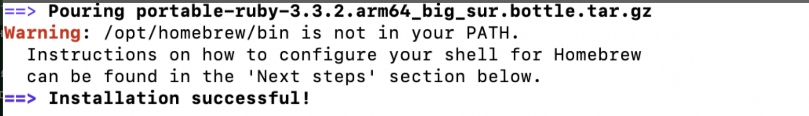
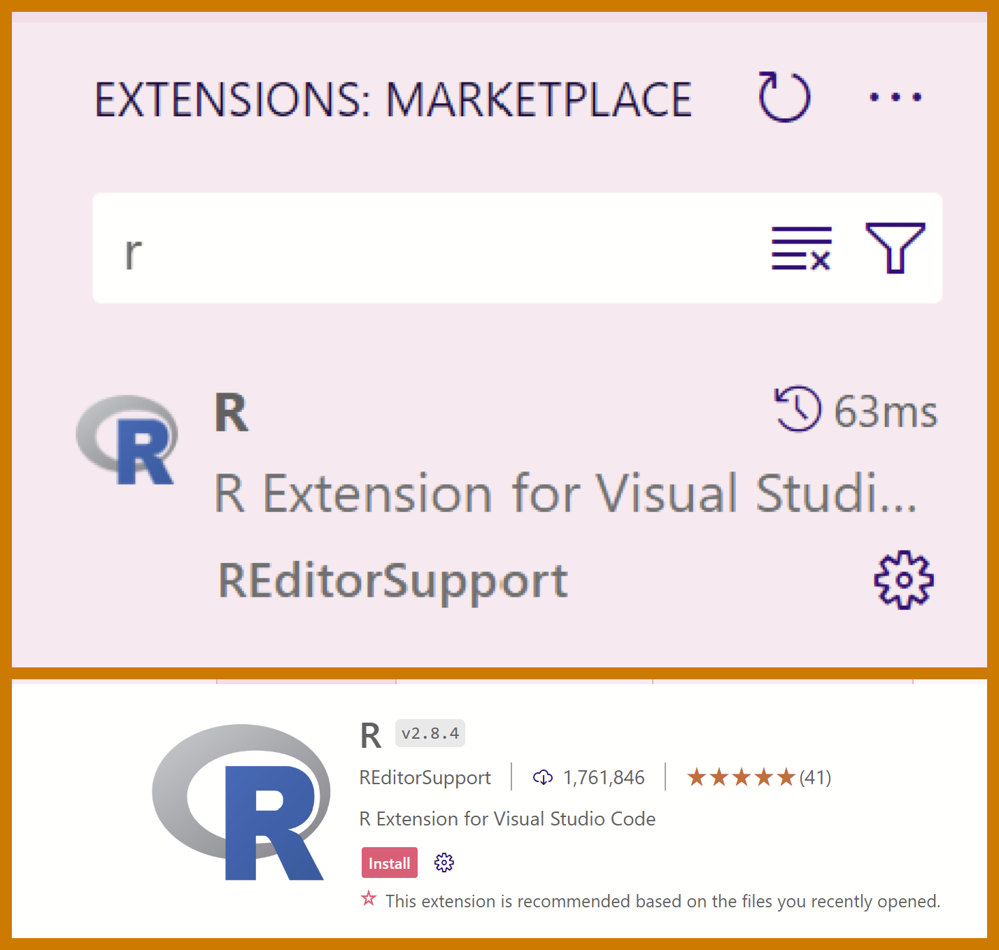
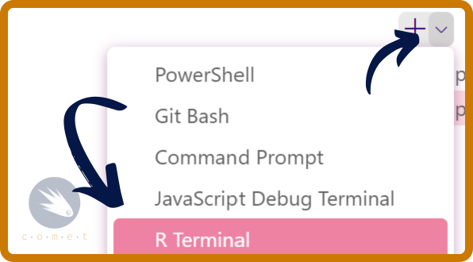
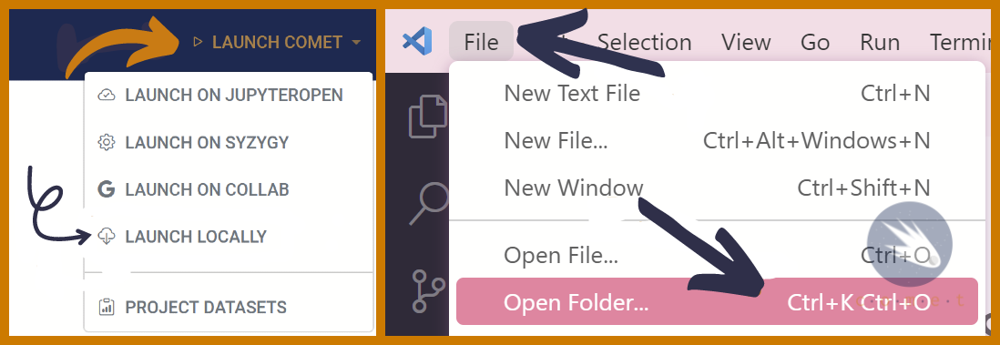

Using VSCode
Prerequisites
- Have installed VSCode on your device.
Why use an IDE?
An IDE, also known as a integrated development environment, is a software application that streamlines software development. Using an IDE such as VSCode is often better than locally hosting a jupyter notebook because it allows us to avoid using CLIs, offers code assistance just as syntax highlighting, and has a built-in highly customizable and extensible environment with a vast library of extensions.
Using COMET with VSCode
1. Installing R
The first thing we’ll need to do is install R onto our computer.
- Head to cran.r-project.org for windows and press
Download R-4.4.0 for Windows - Select
Okay > Nextand select your destination location. - Select the components
Main files,64-bit filesandMessage translations. Then, press next. - Select the toggle
No (acccept defaults)and press next. - Select both
save version number in registryandassociate R with .RData files. - Once the installation is complete, press
Finish.
- Head to cran.r-project.org for macOSx and select the release (on the left-hand side) suited for your device type.
- Open the installer and select
continue>continue>continue>agree>install.
2. Installing a R package Compiler
We’ll need to install a package compiler in order to compile R packages from source.
RTools is a program that allows us to compile R packages.
In the Rtools installer, press Next > Next (ensuring that both check boxes are ticked) > Install.
For Mac, you’ll need to install Xcode Command Line Tools instead.
- Open the Mac terminal. To do so, click on the spotlight icon in the menu bar and search for “terminal.”
- Install Homebrew: Homebrew is a package manager for MacOS which we will use to install Xcode. In the Mac terminal, paste:
/bin/bash -c "$(curl -fsSL https://raw.githubusercontent.com/Homebrew/install/HEAD/install.sh)"
This might prompt you to enter your user password, which is the password that you use to sign into your device (Note that for privacy reasons you won’t be able to see the characters that you type). Once you’ve entered your password, press enter. This may take a while to run.
- You should get an output similar to this:

Notice the warning. To fix this, we’ll need to add our installation to the system path. In the terminal, run:
(echo; echo 'eval "$(/opt/homebrew/bin/brew shellenv)"') >> ~/.zprofile
followed by:
eval "$(/opt/homebrew/bin/brew shellenv)"
which will add the required path to the installation.
- Verify installations: to check that Xtools is installed, run
$ brew doctorin the termial. This should display the output “Your system is ready to brew.”
3. Installing MiniConda
Additionally, we’ll need to do is install miniconda, a python distribution that allows us to simplify package installations. Head to anaconda.com and follow the instructions below, depending on your operating system.
- Scroll to Latest Miniconda installer links and select
Miniconda3 Windows 64-bit. - Open the installer, and select
next > I Agree > Just Me (recommended). - Select your destination folder of choice and press
next. - Select the following options:
- Add Miniconda3 to my PATH environment variable
- Register Miniconda3 as my default Python 3.12
- Clear the package cache upon completion
- Lastly, press
install.
- Scroll to Latest Miniconda installer links and select the version compatible with your device.
- Open the installer and follow the instructions.
4. Setting up our environment
Before we download the comet modules, we’ll need to set up our environment and install required packages.
In your computer file system, search for
Anaconda Prompt (miniconda3)in your files and open it as an administrator. This should open up a terminal.In the terminal, enter the following line code:
conda create -n comet_env jupyterlab r-essentials git r-tidyverse r-car r-stargazer r-estimatr
The first part of this command will create a new python environment called “comet”. An envrionment is an isolated space on your computer where you can work on a given project without the risk of breaking other projects. Essentially, this acts as a safety layer to protect our computer.
The second part of this command will add the required r packages for the COMET modules to the environment.
Lastly, to enable the environment, run conda activate comet_env.
5. Configuring the IRKernel and Installing REditorSupport
We’ll now set up the kernel that will allow us to code in the R programming language in VSCode.
Open the copy of R 4.4.0 that we installed earlier.
In the terminal, paste the following lines of code one at a time:
install.packages('IRkernel')This will prompt you to select a CRAN mirror. Select the one closest to you (if you are at UBC, that would be Canada (MB)).
IRkernel::installspec()
- We’ll now need to install the VSCode REditorSupport extension, which will allow us to interact with the R terminal from within VScode.
- Open R 4.4.0 and paste
install.packages("languageserver"). Make sure to select the CRAN mirror closest to you.- In VSCode, open the extensions page. You can do so by pressing
Ctrl+Shift+Xon Windows, orCmd+Shift+Xon MacOS. Alternatively, you can find the extensions panel on the left-hand side of your screen.

In the extensions search, type
rand select the first option.Press
install. You should now be able to access the R terminal directly from the VSCode console. You may need to close and reopen VSCode.
- You can access the R terminal directly though VSCode by right-clicking the arrow next to the
+in the terminal and selectingR interactive.

6. Opening the COMET modules
Lastly, we need to actually be able to open and work on the COMET modules in VSCode.
- Open comet.arts.ubc.ca and, in the top right corner, select
Launch Comet>Launch Locally. This will download a .zip file to your computer. - Open the file in file explorer and extract the zip folder to your prefered destination.
- In VSCode, select
File>Open Folderand select the COMET folder that you just unzipped. This will open the comet modules on your computer!
